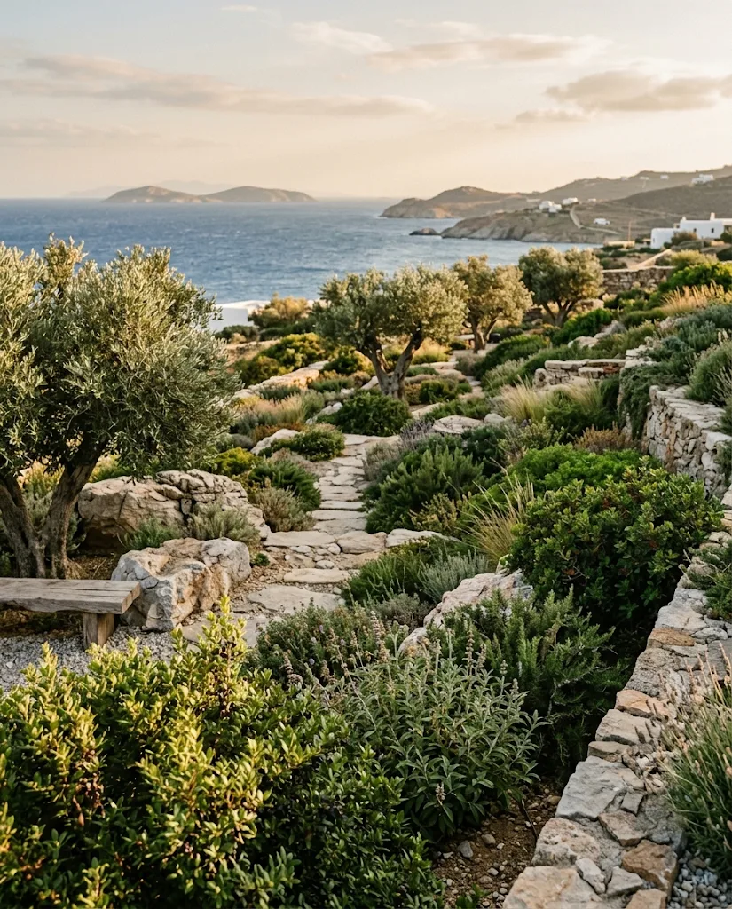
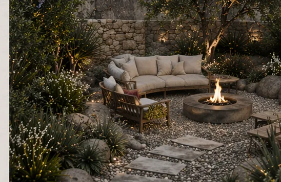
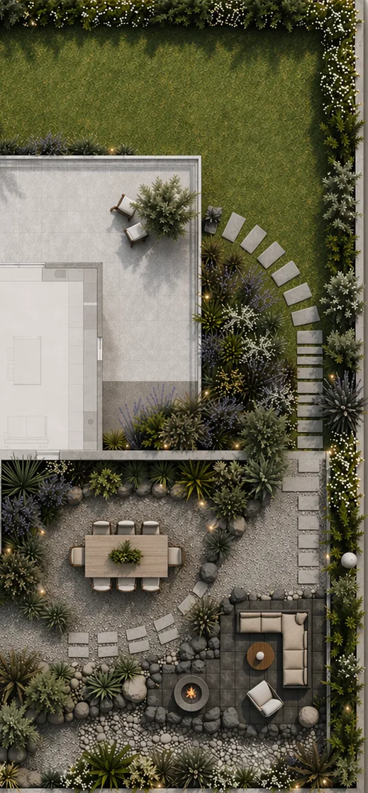
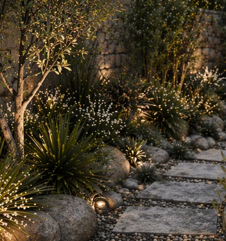
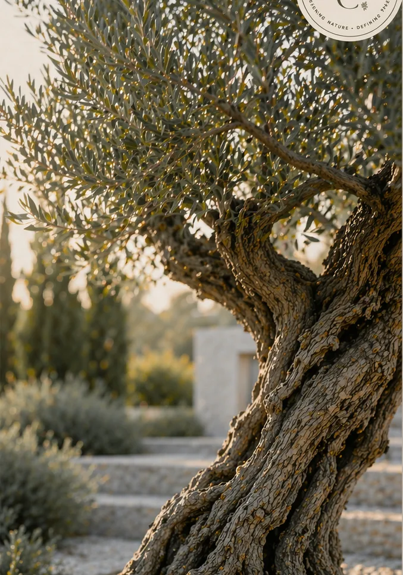
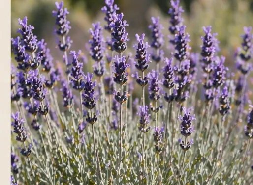
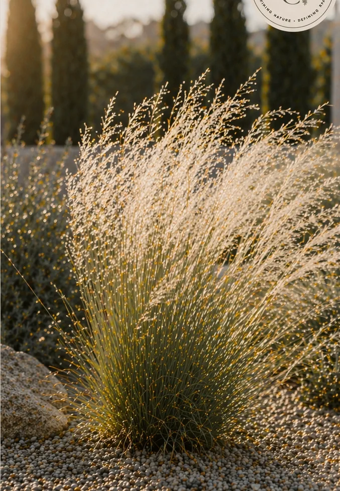
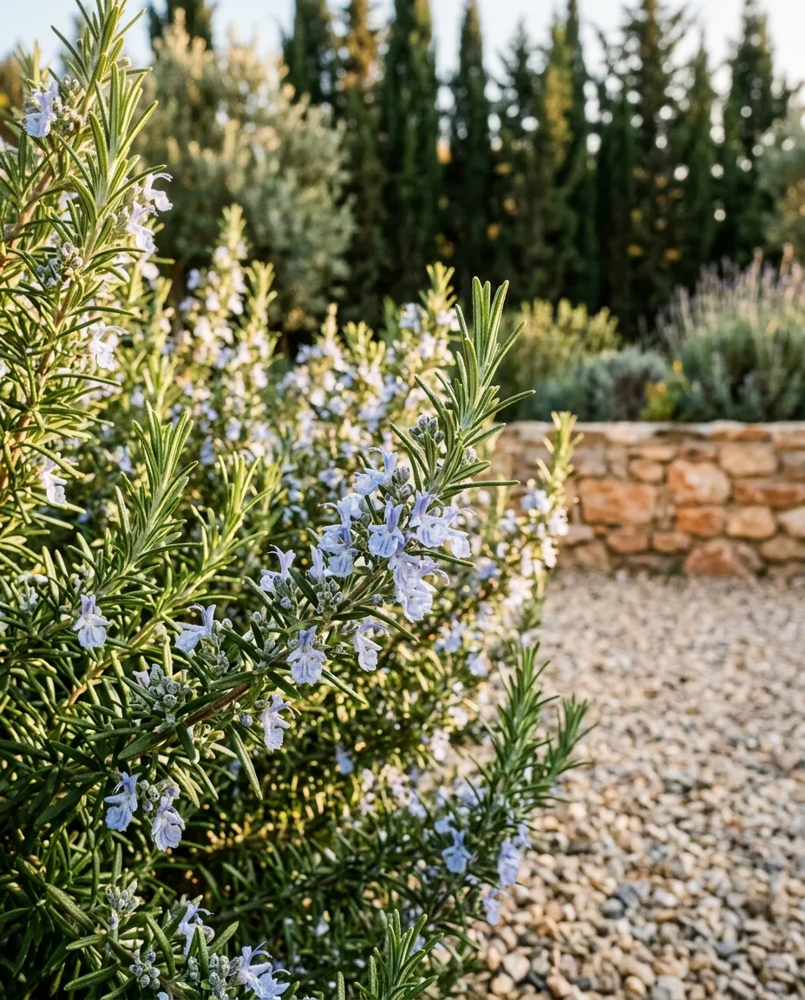
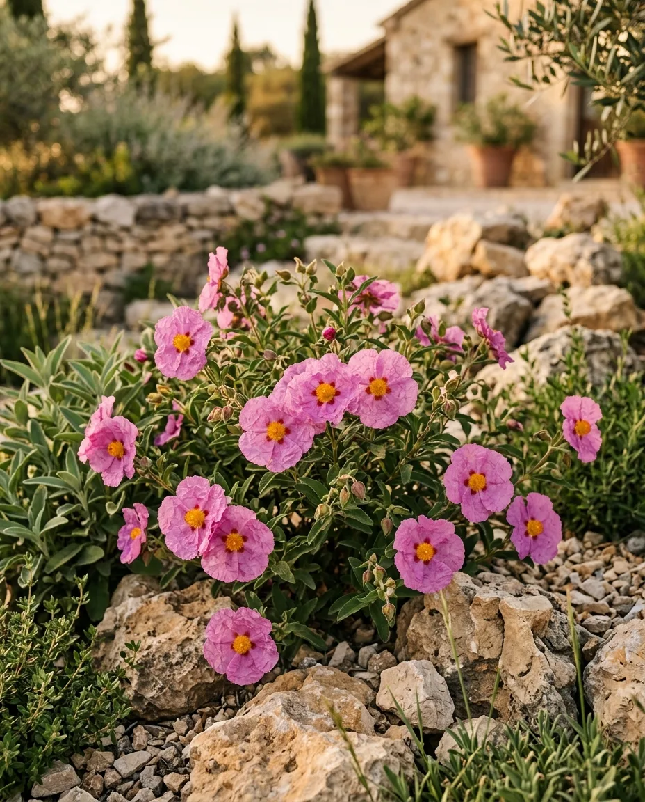
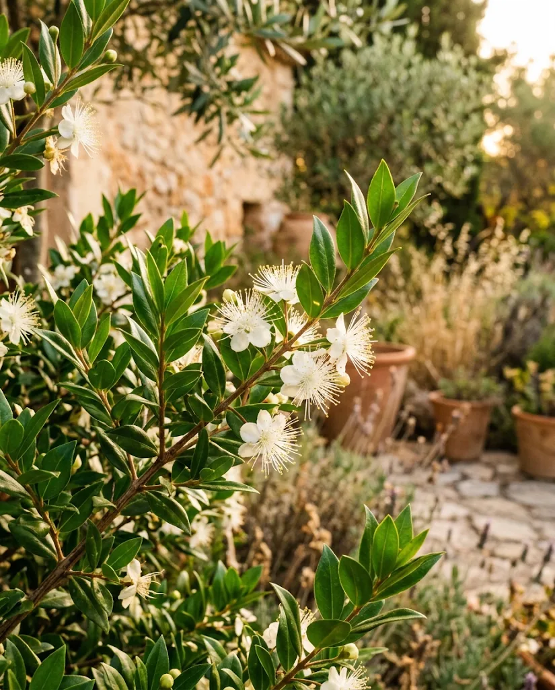

Ege'nin iklimine, toprağına ve ışığına uygun bahçeler, teraslar ve avlular tasarlıyoruz.
Projeni konuşalımBugün değil, yıllar sonra da güzel olacak mekânlar.
TRC Landscape, İzmir merkezli bir peyzaj tasarım stüdyosu. Yerel taşı, kuraklığa dayanıklı bitkileri ve sade bir tasarım dilini bir araya getirerek az su isteyen, her mevsim karakterini koruyan bahçeler kuruyoruz.

Moda olanı değil, kalıcı olanı tasarlarız. Doğru oranlar, doğru malzeme, uzun ömür.
Kusursuz yüzeyler yerine taşın, toprağın ve zamanın izini severiz.
Az ama doğru elemanla; sessiz ama etkili mekânlar.
Alanı ve ihtiyaçlarınızı dinleyip malzeme, bitki ve renk dilini belirliyoruz.
Ölçekli plan, bitki listesi, sulama ve aydınlatma detayları ile net bir maliyet.
Tasarımın sahada birebir hayata geçmesini adım adım takip ediyoruz.
Bitki seçimi, kurakçıl dönüşüm ve bakım planı için profesyonel destek.
Karaburun · İzmir



Az su, çok karakter.

Yüzyıllarca yaşar, yaz kuraklığına dayanır; bahçenin odak noktası.

Tam güneş, az su ve bahçeye yayılan bir koku; arıları çeker.

Rüzgârla dalgalanan ince yapraklar; taş ve çakılla mükemmel uyum.

Herdem yeşil, aromatik; kış ve ilkbaharda mavi çiçekler.

Ege makisinin yerlisi; kayalık toprakta bile pembe çiçekler.

Parlak yapraklar, beyaz kokulu çiçekler; alçak çit için ideal.
Beş adımda tasarımdan uygulamaya.
Ölçü, güneş, rüzgâr, toprak ve sizin yaşam biçiminiz.
Malzeme, bitki ve renk dilini belirleyen ilk eskizler.
Plan, bitki listesi, sulama ve aydınlatma; maliyet netleşir.
Taş, toprak, bitki: tasarım sahada hayata geçer.
İlk yılın bakım ve sulama takvimi bahçenin geleceğidir.
Bahçe, teras ya da avlu… Projen için bize Instagram'dan yaz; alanı ve fikirlerini dinleyip sana en kısa sürede dönüş yapalım.
Instagram'dan mesaj gönder@trc.architecturedesign · İzmir